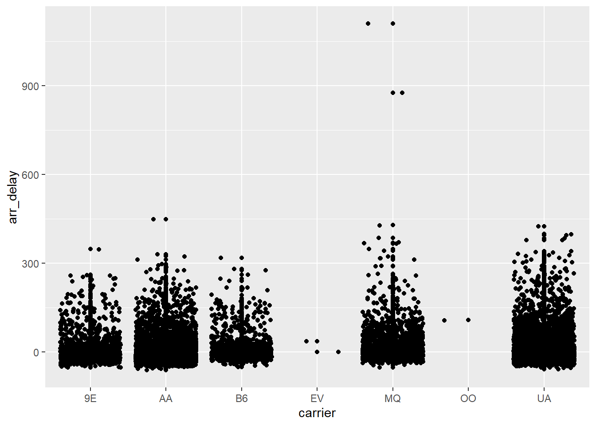
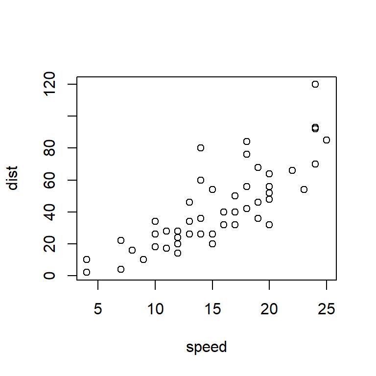
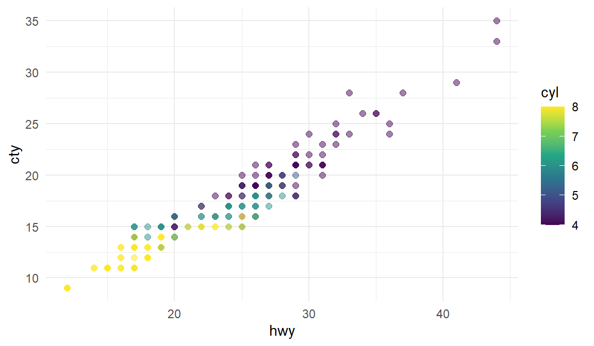
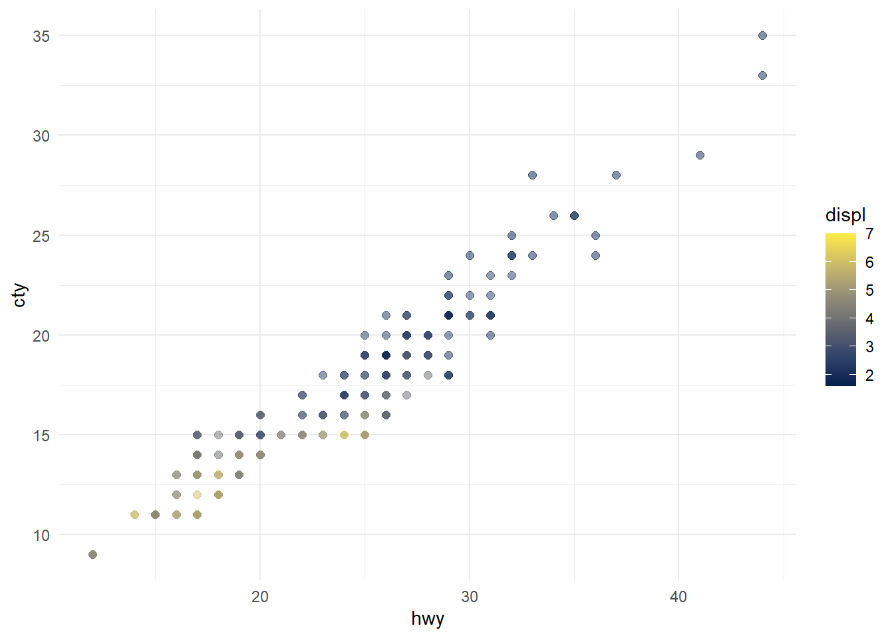

Quarto
Three key elements
The YAML header
At the very top. Stores author and document information, configuration, global options, inputs, styles, format specifications, etc. This document uses:
--- title: "Quarto" author: "Wojciech Hardy" date: "4/11/2023" format: html execute: echo: fenced ---
Markdown
The markup language, with easy and nice editing options.
Code chunks
Where the magic happens - codes whose output becomes a part of the document.
Let’s start with Markdown!
Switching from RMarkdown?
Consider the Source vs Visual mode and Rendering on Save options.
Cheatsheets are handy as always
(this is how you do links in Markdown by the way)
[A Markdown cheatsheet](https://www.markdownguide.org/cheat-sheet/)
[A Quarto cheat sheet](https://res.cloudinary.com/dyd911kmh/image/upload/v1676540721/Marketing/Blog/Quarto_Cheat_Sheet.pdf)
Basic formatting
Some basic text formatting includes *Italics* or _Italics_ (Italics) and **Bold** or __Bold__ (Bold) text. Bold
Some text sdajiodf
Some text
sdajiodf
Some text
sdajiodf
Superscripts can be done like so: R^2^ R2
Subscripts can be done like so: H~2~O H2O
Headers
# Header 1
Header 1
## Header 2
Header 2
### Header 3
Header 3
#### Header 4
Header 4
##### Header 5
Header 5
Lists
Ordered
1. Item 1
2. Item 2
2. Item 3 # Note the error in numbering
Item 1
Item 2
Item 3
# It's fine here though
Unordered
* Item
* Another item
Item
Another item
Subitems
1. Item 1
- Item 2
- Item 3
- Item 1
- Item 2
- Item 3
Tables
| Day | Hour | Group |
|---|---|---|
| Wednesday | 9:45 | 1 |
| Thursday | 16:45 | 2 |
| Thursday | 18:30 | 3 |
(this is a raw Markdown approach)
Quotes
> Hmmm
Hmmm
- Geralt of Rivia
Using Html
You can also just use html to write stuff within the Markdown document (when rendering into html). Here’s something copied and pasted directly from YAML Wikipedia page source code:
|
|
|
| Filename extensions |
.yaml, .yml
|
|---|---|
| Internet media type | Not registered |
| Initial release | 11 May 2001 |
| Latest release |
1.2 (Revision 1.2.2)
1 October 2021 |
| Type of format | Data interchange |
| Open format? | Yes |
| Website |
yaml |
Equations
You can insert equations with the same syntax as in LaTeX (MathJax). E.g. within a sentence $ \sum (x + 1) $ \(\sum (x + 1)\) or as standalone with double $$ at start and finish
\[\int_{-\infty}^{\infty}1/(b-a) dx\]
Using code chunks in Quarto
The main thing, however, is the ability to integrate coding within the document:
```{r}
cat("This is a code chunk")
```This is a code chunk(Also see running within the editor mode)
```{r}
summary(cars)
``` speed dist
Min. : 4.0 Min. : 2.00
1st Qu.:12.0 1st Qu.: 26.00
Median :15.0 Median : 36.00
Mean :15.4 Mean : 42.98
3rd Qu.:19.0 3rd Qu.: 56.00
Max. :25.0 Max. :120.00 ```{r}
plot(pressure)
```
You can also use Python in Quarto with Jupyter Notebook or even use it interchangeably with other languages:
```{python}
import pandas
flights = pandas.read_csv("../Data/flights.csv")
flights = flights[flights['dest'] == "ORD"]
flights = flights[['carrier', 'dep_delay', 'arr_delay']]
flights = flights.dropna()
``````{r}
library(ggplot2)
ggplot(py$flights, aes(carrier, arr_delay)) + geom_point() + geom_jitter()
cat("Example from: https://rstudio.github.io/reticulate/articles/r_markdown.html")
```Example from: https://rstudio.github.io/reticulate/articles/r_markdown.html
And a nice table alternative -> kable from the knitr package.
```{r}
knitr::kable(head(mtcars[, 1:4]), caption = "A kable table, ver 1")
```| mpg | cyl | disp | hp | |
|---|---|---|---|---|
| Mazda RX4 | 21.0 | 6 | 160 | 110 |
| Mazda RX4 Wag | 21.0 | 6 | 160 | 110 |
| Datsun 710 | 22.8 | 4 | 108 | 93 |
| Hornet 4 Drive | 21.4 | 6 | 258 | 110 |
| Hornet Sportabout | 18.7 | 8 | 360 | 175 |
| Valiant | 18.1 | 6 | 225 | 105 |
```{r}
knitr::kable(head(mtcars[, 1:4]), "html", caption = "A kable table, ver 2")
```| mpg | cyl | disp | hp | |
|---|---|---|---|---|
| Mazda RX4 | 21.0 | 6 | 160 | 110 |
| Mazda RX4 Wag | 21.0 | 6 | 160 | 110 |
| Datsun 710 | 22.8 | 4 | 108 | 93 |
| Hornet 4 Drive | 21.4 | 6 | 258 | 110 |
| Hornet Sportabout | 18.7 | 8 | 360 | 175 |
| Valiant | 18.1 | 6 | 225 | 105 |
Code chunks customisation
Using variables as parameters
```{r}
typical_width <- 4
typical_height <- 4
``````{r}
#| fig.width = typical_width,
#| fig.height = typical_height
plot(cars)
```
Using variables within the text 'r variable'
We have previously set a typical width to ‘r typical_width’ and the typical height to ‘r typical_height’.
We have previously set a typical width to 4 and the typical height to 4.
Other figure options
```{r}
#| label: fig-cars
#| fig-cap: "City and highway mileage for 38 popular models of cars."
#| fig-alt: "Scatterplot of city vs. highway mileage for cars, where points are colored by the number of cylinders. The plot displays a positive, linear, and strong relationship between city and highway mileage, and mileage increases as the number of cylinders decreases."
#| fig-width: 6
#| fig-height: 3.5
ggplot(mpg, aes(x=hwy, y=cty, color=cyl)) +
geom_point(alpha = 0.5, size = 2) +
scale_color_viridis_c() +
theme_minimal()
```
And you can refer to Figure 1 (@fig-cars) in-text!
You can also control the layout:
```{r}
#| label: fig-mpg
#| fig-cap: "City and highway mileage for 38 popular models of cars."
#| fig-subcap:
#| - "Color by number of cylinders"
#| - "Color by engine displacement, in liters"
#| layout-ncol: 2
#| column: page
ggplot(mpg, aes(x = hwy, y = cty, color = cyl)) +
geom_point(alpha = 0.5, size = 2) +
scale_color_viridis_c() +
theme_minimal()
ggplot(mpg, aes(x = hwy, y = cty, color = displ)) +
geom_point(alpha = 0.5, size = 2) +
scale_color_viridis_c(option = "E") +
theme_minimal()
```

Conditional execution with eval
(is.weekend comes from the chron package)
```{r}
#| eval = is.weekend(Sys.Date())
cat("It's the weekend! :)")
``````{r}
#| eval = !is.weekend(Sys.Date())
cat("It's not the weekend! :(")
```It's not the weekend! :(Handling errors
```{r}
#| error = TRUE
543 + "clearly a text and not a number"
```Error in 543 + "clearly a text and not a number": non-numeric argument to binary operatorBy default Quarto stops after encountering an error. We can tell it to continue.
Caching results that take long to compute
```{r}
x <- 15
``````{r}
#| label = "slow_chunk",
#| cache = TRUE
Sys.sleep(10)
a <- 5 + x
a
```[1] 20The chunk gets reevaluated if anything changes within the chunk. Make sure you know what you’re doing when caching.
We can use cache.extra = to specify additional conditions for cache invalidation (i.e. to repeat the calculations), e.g.:
file.mtime(‘filename’) # Modification time of the file changed
tools::md5sum(‘filename’) # Content of the file changed
getRversion() # R version changed
etc.
Other stuff:
cache-comments– if you don’t want to recalculate after changing a comment.cache-lazy– loading with lazyload() instead of load() (see Lazy loading)cache-vars– cache specified objectsdependson– reevaluate conditional on a change in a different chunk (or chunks)autodep– will try to find the between-chunk dependencies on its own
Keeping your report nice and clear
Hide the source code with echo=FALSE
1+1[1] 2Hide messages (e.g. when loading stuff) with message=FALSE
```{r}
#| message = FALSE
message("You will not see the message.")
```Hide warnings with warning=FALSE
```{r}
#| warning = FALSE
1:2 + 1:3
```[1] 2 4 4Hide plots with fig.show='hide'
```{r}
#| fig.show = "hide"
plot(cars)
```Hide everything from the chunk with include=FALSE
Hide the results with results='hide'
```{r}
#| results = "hide"
a*typical_height*typical_width
```Generate Markdown content with R code with results='asis'
```{r}
#| results = "asis"
for (i in 1:10) {
cat("- Item", i, "\n")
}
```- Item 1
- Item 2
- Item 3
- Item 4
- Item 5
- Item 6
- Item 7
- Item 8
- Item 9
- Item 10
(Note that it got interpreted as Markdown markup writing!)
ASSIGNMENT
Pick a TV show that had its premieres on TV and thus has some viewership numbers reported on Wikipedia. E.g. Suits (see table just above the References)
Then create a short report (you can copy the content from Wikipedia or other pages for this task) that contains, for example:
(try doing more than one commit for this, i.e. divide your work into steps!)
- A brief description of the show (use italics for names).
- A photo with the logo or a shot from the show itself.
- A summary of some basic statistics (e.g. on viewership or ratings).
- A graph of the viewership over time.
- A graph of the episode-to-episode (or season-to-season) changes in viewership.
- A short description of the observed changes that includes inline references to numbers (e.g. the viewership decreased by
insert_calculated_numberbetween seasons 3 and 5). - Make sure your report looks nice -> this time we’re mostly interested in the output and not necessarily the codes used to achieve it.
renderyour report and save it in the relevant folder of your repo.- Commit the changes and push them to Github.